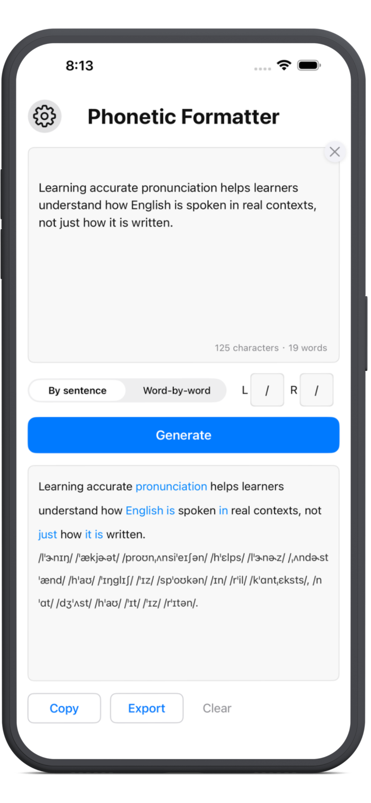

Phonetic Formatter ist eine Offline-App für iOS/iPadOS, die vollständige englische Texte mithilfe des CMU Pronouncing Dictionary in strukturierte IPA überführt – satzweise oder wortweise – mit Dokumentenscan und OCR-Import auf dem Gerät sowie Export nach TXT, DOCX oder PDF.
Vollständig offline auf iPhone und iPad. Keine Daten verlassen Ihr Gerät.
Wählen Sie das Layout, das am besten zu Unterricht und Lernmaterial passt.
Sehen Sie, wie Phonetic Formatter ganze englische Passagen in Sekunden in strukturierte IPA überführt.
Das Internationale Phonetische Alphabet (IPA) ist ein System zur Darstellung der Laute gesprochener Sprache. Es zeigt, wie Wörter tatsächlich ausgesprochen werden, und nicht, wie sie geschrieben werden.
Beispiel: through /θruː/ · thought /θɔːt/
Jedes IPA-Symbol entspricht einem bestimmten Laut, wodurch die Aussprache über verschiedene Sprachen hinweg klar und konsistent dargestellt wird.
Ein Englisch-zu-IPA-Konverter wandelt geschriebenen Text in phonetische Transkription um und hilft Lernenden, Lehrern und Linguisten, die Aussprache besser zu verstehen.
Dieses Tool basiert auf dem CMU Pronouncing Dictionary und funktioniert vollständig offline.
Entwickelt für die Arbeit mit echten englischen Texten – nicht nur für einzelne Wörter.
Wandeln Sie ganze Sätze sofort in strukturierte IPA-Lautschrift um.
Sehen Sie jedes Wort direkt mit der zugehörigen IPA-Aussprache gekoppelt.
Erhalten Sie saubere, strukturierte IPA-Ausgaben für Studium oder Unterricht.
Arbeitsblätter scannen oder Fotos importieren—Texterkennung vollständig auf dem Gerät.
Konvertieren Sie Texte vollständig offline und mit maximalem Datenschutz.
Dieser Abschnitt erklärt, was jede Funktion tut, warum sie wichtig ist und wie sie in realen Lehr-, Lern- und linguistischen Analyse-Workflows eingesetzt wird.
Wandelt vollständige Sätze und Absätze in strukturierte IPA-Transkription um und bewahrt dabei Interpunktion, Abstände und natürliche Satzgrenzen.
Im Gegensatz zu wortbasierten Nachschlagewerkzeugen verarbeitet diese Funktion zusammenhängenden Text als Ganzes und erhält so den natürlichen Sprachfluss in längeren Passagen.
Abkürzungen, Zahlen, Prozentangaben und gemischte Satzzeichen werden unterstützt, ohne dass eine manuelle Vorverarbeitung erforderlich ist. Für echte Passagen mit Namen, Zahlen, Abkürzungen oder unbekannten Wörtern lesen Sie, wie unbekannte Wörter bei der IPA-Konvertierung behandelt werden →
Dadurch eignet sich die Funktion für Unterrichtsmaterialien, Lesetexte und linguistische Datensätze statt nur für isolierte Wörter.
Jedes Wort wird direkt mit seiner IPA-Transkription nebeneinandergestellt, wodurch die Beziehung zwischen Schreibweise und Aussprache klar sichtbar wird.
Diese Ausrichtung hilft dabei, Aussprache auf Wortebene zu verstehen, während der vollständige Satzkontext erhalten bleibt.
Besonders nützlich für den Unterricht, die Erstellung von Arbeitsblättern sowie die Analyse von Betonung und Silbenstruktur im Kontext.
Zudem unterstützt sie die detaillierte Wort-für-Wort-Überprüfung, während jedes Wort im ursprünglichen Satz verankert bleibt. Guide: Warum das Wort-für-Wort-IPA-Layout Lehrkräften hilft →
Liefert saubere, strukturierte IPA-Ausgaben, die sofort für Studium, Annotation und Unterricht genutzt werden können.
Einheitliche Abstände, Betonungszeichen und erhaltene Interpunktion sorgen auch bei langen Texten für klare Lesbarkeit.
Das Format ist für Lehrmaterialien, Vorlesungsnotizen und linguistische Dokumentation optimiert.
Dadurch bleibt IPA sowohl für Lehrende als auch Lernende gut zugänglich.
Tippen Sie auf die Kamera zum Scannen oder wählen Sie ein Foto aus der Mediathek. Englischer Text wird vollständig auf dem Gerät mit Apples Vision-Framework erkannt.
Der erkannte Text wird ins Eingabefeld eingefügt und kann vor der IPA-Transkription bearbeitet werden. Weder Bilder noch Text werden an externe Server gesendet.
Ideal zum Digitalisieren gedruckter Arbeitsblätter, Lehrbuchseiten oder Notizen ohne mühsames Abtippen.
Die gesamte Transkription erfolgt lokal auf dem Gerät ohne Cloud-Verarbeitung oder externe API-Anfragen.
Dadurch bleiben alle Eingaben privat und verlassen das Gerät zu keinem Zeitpunkt.
Der Offline-Betrieb sorgt zudem für stabile Leistung und sofortige Ergebnisse, auch ohne Internetverbindung.
Ideal für Unterricht, Forschung und professionelle Arbeitsumgebungen mit hohen Datenschutzanforderungen.
In Sekunden von englischem Text zu strukturierter IPA.
Starten Sie Ihre erste Umwandlung in Sekunden.
Für iOS laden Im App StoreErstellen Sie in Sekunden saubere Aussprache-Handouts — ohne Kampf mit Word-Schriften.
Transkribieren Sie lange Texte zur phonetischen Analyse — vollständig offline und zuverlässig.
Verstehen Sie den Fluss echten Englischs, indem Sie verbundene Sprache per IPA visualisieren.
| Plandetails | Kostenlos | Pro Monatsabo |
Pro Lebenslang |
|---|---|---|---|
| Tägliche Generierungen | 1 pro Tag | Unbegrenzt | Unbegrenzt |
| Maximale Textlänge | Bis zu 400 Wörter | Bis zu 6.000 Wörter | Bis zu 6.000 Wörter |
| Anzeigeformate | Nach Satz + Nur IPA | Nach Satz + Wort-für-Wort + Nur IPA | Nach Satz + Wort-für-Wort + Nur IPA |
| Aussprachewahl | Alternativen ansehen | Aussprache für Kopieren & Export wählen | Aussprache für Kopieren & Export wählen |
| Vollbild-Lesen | |||
| Ergebnisse kopieren | |||
| Export (TXT / DOCX / PDF) |
— | ||
| Scannen & OCR-Import | — | ||
| Preis | Kostenlos | $2.99/Mo. |
Öffnen Sie Phonetic Formatter, Text einfügen, scannen oder tippen und auf Konvertieren tippen. Die App transkribiert die gesamte Passage mit dem CMU Pronouncing Dictionary. Wählen Sie Satzausgabe oder mit Pro Wort-für-Wort-Ausrichtung. Kopieren oder exportieren Sie als TXT, DOCX oder PDF.
Ja. Phonetic Formatter läuft vollständig offline auf iPhone und iPad. Die Umwandlung erfolgt auf dem Gerät — kein Internet nötig, keine Daten an Server. Nutzbar im Unterricht, unterwegs oder bei schlechter Verbindung.
Absolut! Die App ist vollständig für das iPad optimiert. Wenn Sie die Pro-Version bereits auf Ihrem iPhone gekauft haben, melden Sie sich einfach mit derselben Apple-ID auf Ihrem iPad an und nutzen Sie „Einkäufe wiederherstellen“, um die Pro-Funktionen ohne zusätzliche Kosten zu aktivieren.
Hinweis: Um Ihre Privatsphäre zu schützen, speichert die App keinen Transkriptionsverlauf. Die gesamte Verarbeitung erfolgt sofort und lokal.
Ja, unser Tool basiert auf dem CMU Pronunciation Dictionary, das weithin als Goldstandard für die Verarbeitung natürlicher Sprache (NLP) im nordamerikanischen Englisch gilt. Wir haben es jedoch durch eigene Logik optimiert, um die Transkription auf Satzebene und die Akzentuierung zu verbessern.
Online-IPA-Tools eignen sich gut für schnelle Nachschlagereien und flexible phonetische Optionen. Offline-Apps wie Phonetic Formatter sind besser für längere Texte, strukturierte Layouts und datenschutzorientierte Workflows geeignet. Unser Vergleich: Phonetic Formatter vs. Online-IPA-Tools.
Die App nutzt das CMU Pronouncing Dictionary und konzentriert sich aktuell auf die amerikanische Aussprache (General American). Dies ist der am weitesten verbreitete Standard in den Medien, der Technologie und der internationalen Wirtschaft. Für Nutzer, die Wert auf präzise amerikanische Phonetik legen, bietet die App eine unübertroffene Genauigkeit.
Absolut. Viele Lehrkräfte nutzen die App, um Schülern die Unterschiede zwischen Dialekten zu verdeutlichen oder um amerikanische Texte (wie Literatur oder Reden) zu transkribieren. Dank der Exportfunktion in Word oder PDF können Lehrer die Transkriptionen leicht anpassen oder als Grundlage für den Vergleich von Aussprachevarianten im Unterricht verwenden.
Tippen Sie auf die Kamera, um ein Dokument zu scannen oder ein Foto auszuwählen. Text wird auf dem Gerät erkannt (nur Englisch) und ins Eingabefeld eingefügt. Sie können ihn vor der Transkription bearbeiten. Es wird nichts an unsere Server gesendet.
Die meisten IPA-Tools konzentrieren sich auf Einzelwörter. Erfahren Sie, wie Sie mit ganzen Sätzen, Unterrichtsmaterialien und realen Lernszenarien arbeiten.
Arbeiten Sie mit vollständigen englischen Texten auf iPhone und iPad, offline und mit lokaler Verarbeitung.
Leitfaden ansehen →Wann eine Offline-IPA-App für längere Texte passt—und wann Online-Tools für schnelle Nachschlagereien besser sind.
Weiterlesen →Erstellen Sie druckbare Aussprache-Arbeitsblätter aus vollständigen englischen Texten.
Leitfaden ansehen →Linking, schwache Formen, Reduktionen und natürlicher Satzrhythmus mit IPA-Beispielen.
Leitfaden ansehen →„Diese App ist entstanden, weil mich manuelles IPA-Formatieren zeitraubend frustrierte.
Kein Tracking, keine Werbung — nur ein zuverlässiges Werkzeug für Ihre Lautschrift.“
— Louis, Entwickler · Herzliche Grüße